Напомним, что присходит во время проведения эксперимента Штерна-Герлаха. Сначала приготовляется спин электрона. Предположим, что спин приготовлен вдоль оси z. Вероятность его измерения вдоль этой оси стала равной 100%. Повернем прибор на угол θ1 в плоскости XOZ и проведем измерение спина. Значение спина будет равно или +1 или -1. Сделаем серию таких же действий - подготовка спина вдоль оси z, поворот прибора на угол θ1 и измерение спина. Среднее значение измерений будет лежать в пределах от -1 до +1. Посчитаем вероятности выпадения значений +1 P(+1) и -1 P(-1). Очевидно, что P(+1) + P(-1) = 1 или 100%.
Проделаем такие же последовательности действий, но поворот прибора будем осуществлять на углы θ2, θ3 ... θi и т.д. Для каждой серии опытов посчитаем среднее значение спина. Эти средние значения и соответствующие им углы поворота θi занесем в таблицу проанализируем полученные результаты. Какой вывод можно сделать исходя из проведенного эксперимента?
Предположим, что из эксперимента получили для угла θi величину вероятности
(исходя из серии измерений) равную p для значения спина +1. Тогда вероятность получить -1 равна
(1 - p).
В сумме эти вероятности всегда должны быть равны 1 или 100%. Каждому направлению заданному углом θi
можно попытаться поставить в соответствие некий вектор и каким-то образом связать длину этого вектора с полученной
вероятностью.
Можно просто попробовать приписать длине вектора значение вероятности измерения -1 или +1.
Например, задать вектор состоящий из двух компонент (p, 1-p). Но такой примитивный способ навряд ли позволит
развить красивую математическую теорию.
В квантовой механике принято поступать следующим образом. Назовем искомый вектор
вектором состояния |ψ〉. Положим длину этого вектора равной 1, что
соответствует значению вероятности 100%. 100% - это сумма вероятностей того, что в результате измерения
получено значение +1 и вероятности того, что в результате измерения
получено значение -1. Подчеркнем еще раз тот факт, что это именно вероятности полученные
в результате серии испытаний. Но вместо того, чтобы напрямую задавать вектор в виде (p, 1-p), поступают
следующим образом. Вводят две специальные величины a и b. Эти величины называются амплитудами вероятности
и они определяются следующим образом
|a|2 = p, |b|2 = 1 - p,
|a|2 + |b|2 = 1
Если мы приняли решение, что каждое квантовое состояние будем изображать в виде вектора |ψ〉,
то нам потребуется соответствующий базис - базисные векторы. Сразу возникет вопрос - какова размерность
вектора |ψ〉? Отсюда вытекет другой вопрос - каково количество базисных векторов?
В предыдущем разделе было рассмотрено двумерное спинорное пространство.
Это пространство мы и выберем для отбражения вектора |ψ〉.
Это пространство имеет размерность равную 2, а в качестве базисных векторов выберем единичный
вектор вверх |u〉 и единичный вектор вниз |d〉.
Тогда в качестве вектора состояния системы примем линейную комбинацию базисных состояний
|ψ〉 = a⋅|u〉 + b⋅|d〉
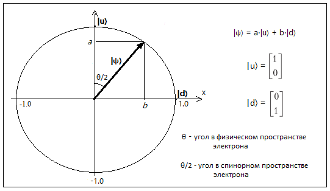
Но остается открытым вопрос - почему в качестве координат |ψ〉 выбраны не простые вероятности а числа, которые только при возведении во вторую степень дают значение вероятности события. Это можно объяснить тем, что любое изменение квантовомеханической системы определяется при помощи унитарного оператора. Унитарный оператор - это такой оператор (на самом деле это матрица) - который оставляет неизменным длину вектора.
Существует такое понятие, как норма. С формальной точки зрения норма (в нашем случае - евклидова норма)
представляет собой квадратный корень из суммы квадратов элементов. Евклидову норму обычно называют второй нормой.
А мы как раз приняли, что сумма квадратов координат вектора состояния |ψ〉 всегда равна 1 и, поэтому, унитарный оператор
U оставляет эту сумму неизменной. Неизменность значения нормы (значение нормы равно 2) гарантирует, что
общая вероятность измерения спина (как +1, так -1) будет обязательно равна 100% при изменении
вектора состояния |ψ〉 🡒 |ψ'〉 с помощью унитарного оператора.
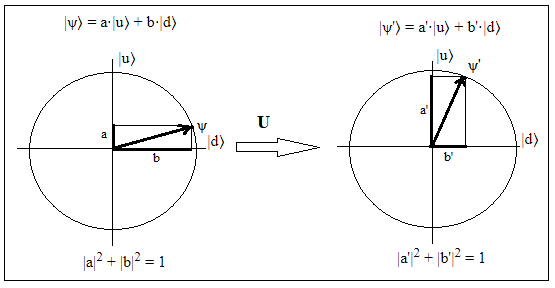
Таким образом амплитуды вероятности (которые только при возведении их в квадрат
дают истинные вероятности) исключительно удобны (и, наверное, незаменимы)
при описании спина на языке математики. Например, можно вспомнить, что вращение вектора на плоскости
сохраняет длину этого вектора (то есть норму равную 2). Поэтому можно провести некоторую аналогию между
вращением вектора и действием унитарного оператора на спин.
В общем случае коэффициенты a и b являются комплексными числами, но если мы рассматрим частный случай,
когда коэффициенты вещественны, то соответствующую визуализацию можно увидеть
в левой части окна программы (в правой части окна показана несколько иная визуализация -
с ней мы разберемся позже).
В левой части окна базисный вектор |u〉 направлен вдоль оси z, а базисный вектор |d〉 - вдоль оси x.
В квантовой механике система описывется вектором состояния. В программе вектор состояния отображен зеленой стрелкой.
Наглядная интерпретация вектора состояния приводится в книге Шона Кэррола "Квантовые миры"
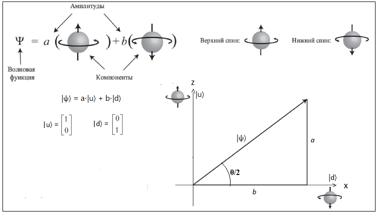
Значения коэффициентов a и b определяются уголом θ между прибором и приготовленным состоянием спина
следующим образом a = sin(θ/2) и b = cos(θ/2). Эти числа являются проекцией вектора |ψ〉
на оси |u〉 и |d〉. Еще раз напомним, что
a2 + b2 = 1 и
sin2(θ/2) + cos2(θ/2) = 1
Почему берется угол θ/2, а не угол θ подробно рассмотрено в предыдущей части.
Угол θ/2 не следует путать с двумя другими углами - локальной фазой и глобальной фазой,
которые нам встретятся в дальнейшем.
Можно также сказать немного иначе - произвольное состояние |ψ〉 является суперпозицией двух векторов a⋅|u〉 и b⋅|d〉. Произвольный вектор состояния |ψ〉 можно разложить на сумму базисных. Вероятность появления базисного конкретного состояния |u〉 или |d〉 определится значениями |a|2 и |b|2 (или значением угла θ). В качестве базисных векторов необязательно брать векторы |u〉 и |d〉 - можно выбрать другую пару ортогональных векторов |u'〉 и |d'〉 и в этом случае состояние |ψ〉 будет задано суперпозицией векторов a'⋅|u'〉 и b'⋅|d'〉.
Проводя эксперимент Штерна-Герлаха можно заметить следующий момент - если подготовленному состоянию
назначить определенный вектор, а для измеренного спина определить другой вектор то вероятности P(+1) и
P(-1) будут зависеть от проекции второго вектора на первый вектор. Напомним, что проекция одного
вектора на другой называется скалярным прозведением векторов. Эта проекция одного вектора на другой
в некотором смысле и заключает в себе все вышесказанное.
Предположим, что подготовленное состояние имеет направление вверх по оси z. Тогда вектор состояния
для него равен
|ψ〉 = 1⋅|u〉 + 0⋅|d〉,
а вектор состояния полученный в результате измерения спина при повороте прибора на некоторый угол равен
|ψ〉 = a⋅|u〉 + b⋅|d〉
Тогда скалярным прозведениеие этих векторов является сумма произведений коэффициентов
при базисных векторах (предполагаем, что a и b являются действительными числами)
скалярное_произведение = 1⋅a + 0⋅b = a
Можно сделать вывод, что после измерения спин вдоль оси z принял значение равное коэффициенту a.
Но приготовленное состояние спина вдоль оси z было равно 1. Таким образом мы видим, что спин
"забыл" свое прежнее состояние и получил новое, которое определяется углом поворота прибора.
В квантовой механике векторы строки называются бра-векторами, а векторы столбцы - кет-векторами
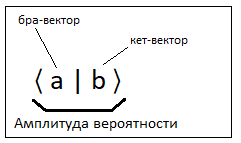
Термины бра-векторы и кет-векторы (Bra–ket notation) ввел в употребление великий физик Поль Дирак.
Амплитуда вероятности, бра- и кет-векторы разобраны во многих книгах и статьях. Особенно рекомендую LightCone - прекрасные видеолекции по квантовой механике и теории групп на русском языке. Лекции можно найти по ссылке Элементарное введение в квантовую механику. Также рекомендую книгу Сасскинда и Фридмана "Квантовая механика". Эту книгу я уже упоминал, когда рассматривал эксперимент Штерна-Герлаха. Обязательно ознакомьтесь с этими двумя источниками, так как некоторые разделы квантовой механики следует объяснять гораздо подробнее чем это рассмотрено в данном разделе.
Хотя формальная математическая интерпретация векторов состояния рассмотрена большим количеством авторов
пособий по квантовой механике, практически везде сразу говорится, что в общем случае величины a и b
|ψ〉 = a⋅|u〉 + b⋅|d〉
должны быть представлены комплексными числами. Обычно этот факт принимается как данность и не поясняется.
Все сводится к тому, что в призводимых вычислениях комплексные числа хорошо работают и с их помощью
получается правильный результат. Иногда, комплексные числа появляются даже автоматически при выполнении
некоторых вычислений. Поэтому данная программа визуализации фактически сделана с целью
показать откуда появляются комплексные коэффициенты a и b.
Предположим, что |ψ〉 = a⋅|u〉 + b⋅|d〉, тогда величина a*⋅a будет представлять собой
вероятность того, что результатом измерения спина вдоль оси z будет равна +1.
А величина b*⋅b -вероятность того, что результатом измерения спина вдоль оси z будет равна -1.
Величины a* и b* - это комплексно-сопряженные значения чисел a и b.
По другому эти вероятности выражаются следующими формулами
Pu = 〈ψ|u〉〈u|ψ〉 = a*⋅a = |a|2
Pd = 〈ψ|d〉〈d|ψ〉 = b*⋅b = |b|2
Квантовая механика сообщает нам, с какой вероятностью при измерении спина в данном направлении
мы получим каждый отдельно взятый результат +1 (u - вверх) или -1 (d - вниз).
Окно программы включает в себя две различные визуализации поворота спина электрона.
В левой части окна спин поворачивается в физическом пространстве в плоскости OXZ,
а в правой части - в физическом пространстве в плоскости OYZ. В плоскости OXZ находятся направления
вверх, вниз, вправо и влево. Этим направлениям в спинорном пространстве соответствуют
базисные векторы |u〉, |d〉, |l〉 и |r〉.
В плоскости OYZ также присутствуют направления вверх и вниз, но теперь направления вправо и влево
заменяют направления вперед и назад. Этим направлениям в спинорном пространстве соответствуют
базисные векторы |u〉, |d〉, |f〉 и |b〉.
Начнем сначала с левой части, а потом перейдем к правой.
В левой части окна базисный вектор |u〉 направлен вдоль оси z, а базисный
вектор |d〉 - вдоль оси x. Кординаты по осям z и x задаются при помощи вещественных чисел.
Если предположить, что вектор рассматривать |ψ〉 лежит в плоскости OXZ, то все великолепно работает.
Повернем прибор Штерна-Герлаха на 90° в физическом пространстве. В этом случае в спинорном (математическом)
пространстве OXZ ему будет соответствовать поворот на 45°. Чтобы убедиться в этом задайте в программе
угол theta_1 равным 90° следующим образом
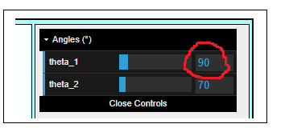
Вектор состояния, который отображается зеленой стрелкой, принял вид
|ψ〉 = 0.707⋅|u〉 + 0.707⋅|d〉
и стал указывать в напралении вектора |r〉 в спинорном пространстве. Но в физическом пространстве, в котором
на самом деле находится электрон, а не его математический образ, электрон повернулся на 90° и ось электрона
стала совпадать с осью x. Синяя стрелка, которая совпадает с осью электрона в физическом пространстве,
отображает этот поворот.
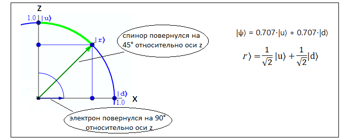
В результате имеем тот факт, что в плоскости OXZ можно без труда отобразить направление спина перпендикулярное оси Z и
направленное вправо:
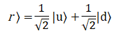
Похожим способом в плоскости OXZ отображается направление спина перпендикулярное оси Z и
направленное влево:
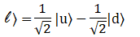
Таким образом, если бы мы имели не трехмерное физическое пространство а только двухмерное, то для
вектора состояния |ψ〉 вполне хватило бы действительных чисел для отображения коэффициентов a и b
перед базисными векторами |u〉 и |d〉.
Кстати, отметим тот факт, что вместо базисных векторов |u〉 и |d〉 можно взять любые другие ортогональные вектора. Например, вектора |r〉 и |l〉.
К сожалению такая красивая картина нарушается когда мы пытаемся направить спин перпендикулярно
плоскости OXZ. Электрон находится в трехмерном физическом пространстве и поэтому
мы имеем его трехмерные повороты в физическом пространстве. Возникает вопрос - как отразить
трехмерные поворота электрона в двумерном спинорном пространстве.
Если в качестве базисного вектора в спинорном пространстве вдоль оси z можно по-прежнему взять вектор |u〉,
то что взять в качестве второго базисного вектора? Вектор |d〉, на первый взгляд, не подходит,
так как он лежит в плоскости OXZ, а нам требуется базисный вектор,
который должен быть перпендикулярным этой плоскости. Поэтому приходится вводить двумерное комплексное
пространство. Возьмем в качестве второго базисного вектора совершенно новый базисный вектор
и обозначим его |di〉. Этот вектор показан находится на мнимой оси i и показан на следующем рисунке
(этот рисунок представляет собой скриншот программы из следующей главы).
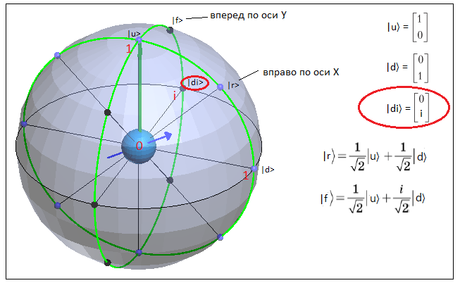
Получается, что вектор состояния |ψ〉 по-прежнему находится в двумерном пространстве, но это
двумерное пространство очень особое и в некотором смысле может трактоваться и как трехмерное.
Если мы рассматриваем обычное физическое пространство, то в нем принципиальной разницы между
направлениями влево/вправо и вперед/назад. Эти две пары векторов просто ортогональны друг другу,
но направления вдоль них в обоих случаях измеряются действительными числами.
Поэтому если
в плоскости OXZ в спинорном пространстве направления влево/вправо выглядят следующим образом
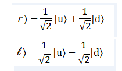
то в плоскости OYZ направления вперед/назад могли бы выглядять почти также, но вместо
базисного вектора |d〉 следовало бы взять вектор |di〉
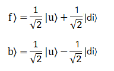
Однако, мы не можем расположить этот базисный вектор вдоль оси y в спинорном (но не в физическом!!!) пространстве
так как вектор состояния |ψ〉 имеет всего две компоненты и следовательно должен иметь только два базисных вектора.
Поэтому базисный вектор |di〉 представим в виде
|di〉 = i|d〉, где i - мнимая единица
Таким образом базисный вектор |di〉 является почти тем же базисным вектором d〉 но повернутым относительно
него на 90° в плоскости OXY.
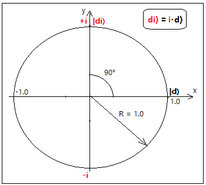
Запишем выражения для векторов |f〉 и |b〉 - вперед и назад при помощи базисных векторов |u〉 и |d〉. Для этого
умножим коэффициент при |d〉 на мнимую единицу i и тем самым мы получим окончательный вид |f〉 и |b〉.
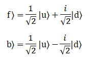
Можно сказать, что комплексные числа появились достаточно искуственно вследствие простых математических
манипуляций с базисными векторами. Но несмотря на эту искуственность их появления трудно
(а может быть и невозможно?) придумать математическое описание квантовой механики без комплексных чисел.
Приготовим спин в направлении |f〉 по оси y а затем повернем прибор Ш-Г для измерения спина σz в
направлении |u〉 по оси z. Вероятности обнаружить спин вверх по оси z и спин вниз по оси z будут равны 0.5 или 50%.
Соответствующая этому повороту амплитуда вероятности будут равна 〈f|u〉.
Поэтому справедливо следующее выражение
|〈f|u〉|2 = 〈f|u〉〈u|f〉 = 0.5
Также |f〉 и |b〉 должны быть ортогональны
〈f|b〉 = 0
Перемножая соответствующие матрицы и учитывая сопряжение бра-векторов видим, что этим условиям векторы |f〉 и |b〉 удовлетворяют
В качестве базисных векторов можно использовать вектора |u〉, |d〉, |r〉, |l〉, |f〉 и |b〉.
Пары векторов |u〉 и |d〉, |r〉 и |l〉, |f〉 и |b〉 являются ортогональными друг другу в
спинорном пространстве. Это легко доказать найдя их скалярное призведение, что мы уже
сделали для |f〉 и |b〉.
〈u|d〉〈d|u〉 = 0
〈r|l〉〈l|r〉 = 0
〈f|b〉〈b|f〉 = 0
Если спин ориентирован вдоль оси x, а затем измерен вдоль оси z то он будет равновероятно направлен
или вверх или вниз.
|〈u|r〉|2 = 〈u|r〉〈r|u〉 = 0.5
|〈u|l〉|2 = 〈u|l〉〈l|u〉 = 0.5
|〈d|r〉|2 = 〈d|r〉〈r|d〉 = 0.5
|〈d|l〉|2 = 〈d|l〉〈l|d〉 = 0.5
Если спин ориентирован вдоль оси y, а затем измерен вдоль оси z то он будет также равновероятно направлен
или вверх или вниз.
|〈b|u〉|2 = 〈b|u〉〈u|b〉 = 0.5
|〈b|d〉|2 = 〈b|d〉〈d|b〉 = 0.5
|〈f|u〉|2 = 〈f|u〉〈u|f〉 = 0.5
|〈f|d〉|2 = 〈f|d〉〈d|f〉 = 0.5
Если спин ориентирован вдоль оси y, а затем измерен вдоль оси x то он будет равновероятно направлен
или влево или вправо.
|〈b|r〉|2 = 〈b|r〉〈r|b〉 = 0.5
|〈b|l〉|2 = 〈b|l〉〈l|b〉 = 0.5
|〈f|r〉|2 = 〈f|r〉〈r|f〉 = 0.5
|〈f|l〉|2 = 〈f|l〉〈l|f〉 = 0.5
Комплексные числа позволяют расчитать интерференцонные эффекты в квантовой механике. Хотя эта тема напрямую не относится к нашей программе визуализации все равно раскроем эту тему подробнее.
Предположим, что требуется найти вероятность полученную в результате сложения
двух альтернативных возможностей приводящих к событию. В классической теории вероятностей вероятности
альтернативных возможностей суммируются. Но в квантовой механике складываются не вероятности, а амплитуды
вероятностей. Самый известный пример такого поведения квантовых объектов это двухщелевой эксперимент.
В нем одиночный фотон или электрон проходит через две щели и интерферирует сам с собой.
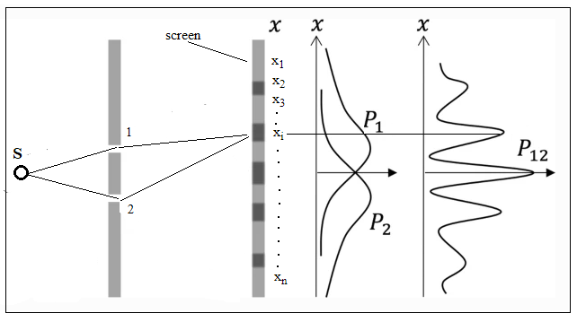
Электрон, который вылетает из источника S проходит либо через щель 1 либо через щель 2. Это две взаимоисключающие возможности, так как считается что электрон это частица и не может пройти через две щели одновременно. Поэтому после прохождения щели электрон будет определяться суперпозицией. Вообще-то это очень странно, так как теперь электрон больше похож на волну, а не на частицу. Но в квантовой механике существует достаточно много странных парадоксов. Зацикливаться на них не будем так как существует огромное количество книг, статей и видео в которых пытаются хоть как-то дать объяснения этим парадоксам.
|ψ〉 = |1〉 + |2〉 = a1|x1〉 + a2|x2〉 + ... + ai|xi〉 + ... + an|xn〉 + b1|x1〉 + b2|x2〉 + ... + bi|xi〉 + ... + bn|xn〉 = (a1 + b1)|x1〉 + (a2 + b2)|x2〉 + (ai + bi)|xi〉 + ... + (an + bn)|xn〉
Не следует путать угол φ с углом θ. Угол θ определяет вероятности появления +1 и -1 в процессе измерения и тем самым задает значения вероятностей |a|2 и |b|2. Угол φ не участвует в задании значений |a|2 и |b|2. В этом можно убедиться используя модель прибор Штерна-Герлаха из первой части. Но из-за присутствия этого угла может наблюдаться эффект интерференции.
Интерференция возникает вследствие наличия в выражении (*) члена 2⋅|a|⋅|b|⋅cos(φ). Допустим, что
|a| = |b| = 1. Тогда, если cos(φ) = 1, то
|a + b|2 = |a|2 + |b|2 + 2⋅|a|⋅|b| = 4.
Если cos(φ) = -1, то
|a + b|2 = |a|2 + |b|2 - 2⋅|a|⋅|b| = 0.
Хотя в некоторых точках экрана значение |a + b|2 может быть равным 0, а в других значение |a + b|2
может быть равным даже 4 (без учета нормализации амплитуд вероятности),
значение суммы |a1 + b1|2 + |a2 + b2|2 + ... +
|an + bn|2 всегда равно 1 если аккуратно нормализовать вектор состояния.
В двухщелевом эксприменте интерференция появляется только когда открыты обе щели. Если открыта только одна щель, то интерференция не возникает так как к любой точке xi на экране подходит только одна волна (волна? или частица?).
Таким образом, в зависимости от значения угла φ, может получиться либо взаимное усиление либо взаимное гашение амплитуд вероятности. Математически этот факт объясняется использованием комплексных чисел. Если бы мы могли разделить исходный вектор состояния |ψ〉 на вектора a и b затем повернуть один из этих векторов на подходящий угол φ, то применив соответствующие приборы, могли бы увидеть интерференцию a и b. В качестве прибора, (возможно ?), подошел бы интерферометр Маха-Цандера. Интерферометр Маха-Цандера уже позвользовался для наблюдения интерференции расщепленного фотона.
На мой взгляд наиболее простое и понятное объяснение почему в волновой механике используются комплексные числа приводится в научно-популярной книге Батыгина В.В. "Законы микромира" в параграфе, который называется "Как же все-таки записать волну Де Бройля".
Напомним, что в предыдущей части был подробно рассмотрен вопрос о том что будет происходить при измерении в одной и той же квантовой системе но разделенной некоторым способом на две части. В ней были рассмотрены особенности появления интерференции в таких разделенных системах.
В следующем разделе будет рассмотрена программа, в которой можно будет осуществлять поворот на произвольный угол и в любом направлении в трехмерном физическом пространстве. Но это будет пока еще не сфера Блоха, которую мы также рассмотрим.